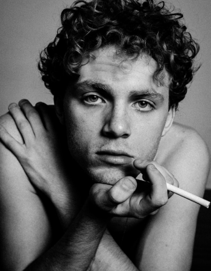

Фотографи как
отражение души
Меня зовут Галина Мэй и я люблю показывать людям
насколько они красивы
01
03

Я лишь хочу захватить
секундную часть реальности
Я начала фотографировать, когда была
подростком. Среди прочих увлечений, которые
быстро забывались, фотография надолго вошла в
мою жизнь и стала ее неотъемлимой частью.
— Видео с фотосессий
Я люблю людей, которых
фотографирую. Я имею в
виду, что они мои друзья,
через свои фотографии я
живу с ними
Как проходит фотосессия
Мы заранее обсуждаем результат, которого вы хотите
добиться, ищем локацию и продумываем ваш образ до
мелочей.
В фотосессию включено время для расслабления и
адаптации, ведь в конечном счете, фотография о том,
кто вы есть. Это правда по отношению к себе и именно
ее мы будем искать.
— портфолио

отзывы
"Мне сложно видеть себя
на фото. То что обычно
получается, не похоже на то,
какой мне хотелось бы себя
видеть...”
Полина Кузина